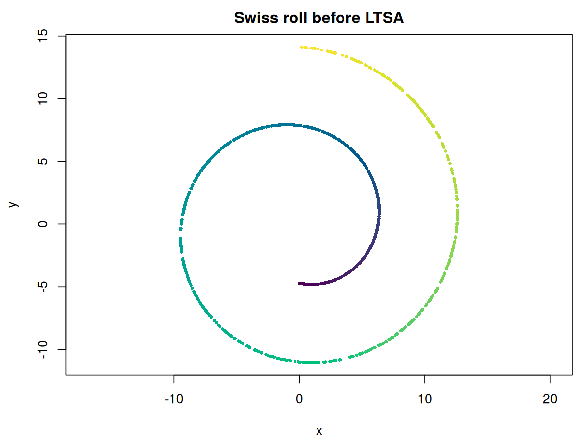
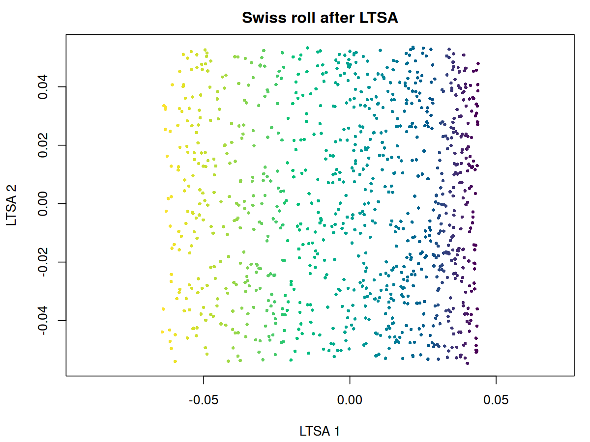

Fast LOcal Tangent Space Alignment Method
An implementation of the Local Tangent Space Alignment method (Zhang & Zha, 2004), a spectral method for dimensionality reduction. It is one of the few methods that can unroll the “swiss roll” data set and its variants without major distortion. I consider this implementation “Fast” because of its use of approximate nearest neighbors. Internally it works with sparse matrices and does not require calculating all eigenvectors, so can scale to large datasets.
Installation
# install.packages("pak")
pak::pak("jlmelville/flotsam")Example
library(flotsam)
# Create a "swiss roll": 2D rectangle rolled up in 3D
n <- 1000
max_z <- 10
# phi represents the position along the roll
phi <- stats::runif(n, min = 1.5 * pi, max = 4.5 * pi)
x <- phi * cos(phi)
y <- phi * sin(phi)
z <- stats::runif(n, max = max_z)
swiss_roll <- data.frame(x, y, z)
# See side section to prove it's rolled
plot(swiss_roll$x, swiss_roll$y, col = phi)
# unroll it
swiss_unrolled <- ltsa(swiss_roll, verbose = TRUE)
plot(swiss_unrolled, col = phi)


Current Status
June 27 2026: Version 0.0.0.9002 is a big re-write compared to the initial release, adding multi-threaded C++ local-weight construction, triangular sparse matrix assembly, and Rayleigh-Ritz postprocessing for more reliable final eigenanalysis.
See Also
- Rdimtools also contains an R implementation of LTSA.
- Eigenanalysis is carried out with either RSpectra or irlba.
- Approximate nearest neighbor analysis via rnndescent.
Further Reading
A fairly arbitrary selection of papers that contained at least one thing I found interesting while writing this package.
Zhang, Z., & Zha, H. (2004). Principal manifolds and nonlinear dimensionality reduction via tangent space alignment. SIAM journal on scientific computing, 26(1), 313-338. https://doi.org/10.1137/S1064827502419154
Xiang, S., Nie, F., Pan, C., & Zhang, C. (2011). Regression reformulations of LLE and LTSA with locally linear transformation. IEEE Transactions on Systems, Man, and Cybernetics, Part B (Cybernetics), 41(5), 1250-1262. https://doi.org/10.1109/TSMCB.2011.2123886
Sun, W., Halevy, A., Benedetto, J. J., Czaja, W., Li, W., Liu, C., … & Wang, R. (2013). Nonlinear dimensionality reduction via the ENH-LTSA method for hyperspectral image classification. IEEE Journal of Selected Topics in Applied Earth Observations and Remote Sensing, 7(2), 375-388. https://doi.org/10.1109/JSTARS.2013.2238890
Hong, D., Yokoya, N., & Zhu, X. X. (2017). Learning a robust local manifold representation for hyperspectral dimensionality reduction. IEEE Journal of Selected Topics in Applied Earth Observations and Remote Sensing, 10(6), 2960-2975. https://doi.org/10.1109/JSTARS.2017.2682189
Zhang, S., Ma, Z., & Tan, H. (2017). On the Equivalence of HLLE and LTSA. IEEE transactions on cybernetics, 48(2), 742-753. https://doi.org/10.1109/TCYB.2017.2655338